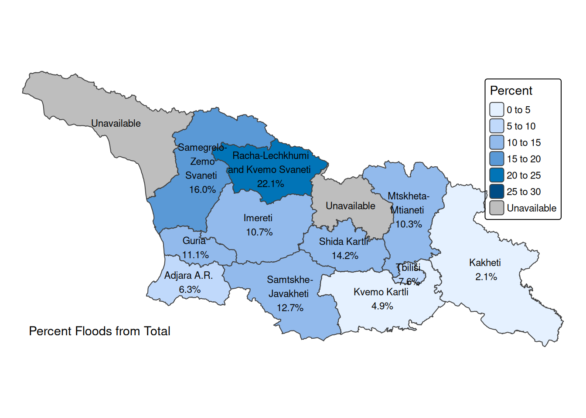

# Clean workspace
rm(list = ls())
# Georgia country ISO code
iso <- "GEO"
# Survey year
survey_year <- 2023
# Exchange rate USD per GEL
er <- 0.37
# Years of interest for our macroeconomic scenario analysis
# analysis_years <- c(2030, 2050)Vulnerability Analysis
Georgia Country Climate and Development Report
Introduction
In analysis, we estimate number of people under vulnerable circumstances.
“The vulnerability of a household to an extreme weather event will depend on the characteristics of the household that determine the event’s initial impact and the ability of a household to cope with that event (…). This is reflected in the IPCC definition, vulnerability includes both ‘the sensitivity or susceptibility to harm’ and ‘the lack of capacity to cope and adapt’” (Doan et al. 2023).
Preliminaries
We will use the following libraries for this exercise.
library(tidyverse)
library(haven)
library(readxl)
library(openxlsx)
library(gt)
library(sf)
library(tmap)
# library(raster)Datasets
We use data from the 2023 survey for the Labor Split and data from the 2022 survey for the household expenditure and capital shares in In mil. GEL per year per household type.
# Household Unique ID, Weights, Location and other basic variables
hh_basics <- read_sav(
"data/ilcs_2023/sysschedule.sav") |>
mutate(
UID = as.integer(UID))
# Household size (includes no. of family members)
hh_size <- read_sav(
"data/ilcs_2023/familysize.sav")|>
mutate(
UID = as.integer(UID))
# Processed income at household level
hh_income <- read_sav(
"data/ilcs_2023/tblincomes.sav")|>
mutate(
UID = as.integer(UID))
# Consumption aggregate at household level
hh_expenditure <- read_sav(
"data/ilcs_2023/tblexpenditures.sav")|>
rename(# rename total expenditure variables
total_expenditure = MTlianixarjebi_,
total_expenditure_aeq06 = MTlianimoxmareba_EqAdScale,
total_expenditure_aeq08 = Mtlianimoxmareba_EqAdScale_08) |>
mutate(
UID = as.integer(UID))
# Characteristics of the dwelling
hh_chars <- read_sav(
"data/ilcs_2023/tblshinda01.sav")|>
mutate(
UID = as.integer(UID))
# Persons (pp)
pp <- read_sav(
"data/ilcs_2023/tblshinda02.sav") |>
mutate(
UID = as.integer(UID),
MemberNo = as.integer(MemberNo))
# Labor (pp)
pp_labor <- read_sav(
"data/ilcs_2023/tblshinda05_1.sav") |>
mutate(
UID = as.integer(UID),
MemberNo = as.integer(MemberNo),
Q5 = as.integer(Q5),
Q12 = as.integer(Q12))
# Poverty
poverty <- read_dta(
"data/ilcs_2023/POVERTY_stata.dta") |>
mutate(
UID = as.integer(UID))
# Ind. Poverty
ind_poverty <- read_dta(
"data/ilcs_2023/IND_POVERTY_stata.dta") |>
rename(MemberNo = memberno) |>
mutate(
UID = as.integer(UID),
MemberNo = as.integer(MemberNo))
# Exposure
floods <- read.csv(
"data/exposure/floods/df_exposure_100.csv"
)
floods_all_returns <- read.csv(
"data/exposure/floods/exposure_allrt_v3.0.csv")
# Maps
adm1 <- sf::read_sf("data/gis/geo-adm1.shp") |>
dplyr::select(RegNo, region, ADM1_PCODE, ADM1_EN, ADM1_KA, geometry) |>
dplyr::arrange(ADM1_PCODE)Look-up tables
sam_activities <- read_excel(
"data/sam/classifications.xlsx",
sheet = "SAM-REV2",
col_names = T,
col_types = "text",
)
sam_factors <- read_excel(
"data/sam/classifications.xlsx",
sheet = "SAM factors",
col_names = T,
col_types = "text",
)
coicop <- read_excel(
"data/sam/classifications.xlsx",
sheet = "COICOP",
col_names = T,
col_types = "text",
) |>
mutate(simple_code = as.integer(gsub("\\.", "", Coicop)))
coicop_filtered <- coicop |>
filter( nchar(as.character(simple_code)) >= 5)Vulnerability indicators
Income
Following the methodology (Doan et al. 2023) this identifies the share of households that have income or consumption less than 1.5 times the poverty line. In the guidance paper, they use $2.15 (2017 PPP), but in our case, we use the official poverty line of Georgia for the year 2023 of 212.81 GEL per cápita (adult equivalent) per month. To be consistent with country assessments, we use consumption and not income, but to be consistent with the methodology paper, we continue to call this variable income.
# Poverty line
poverty_line <- poverty$pline[1]
income_threshold <- poverty_line * 1.5
hh_vulnerable <- poverty |>
select(
QuartNo,
UID,
DiaryID,
RegNo,
type,
weights_quar, # Sampling weights of the HH
weights, # HH weights
hhsize, # Number of HH members
Childern, # (note typo) Children
Adult, # Adolescents 8-15
Working_age_man,
Working_age_Woman,
Pensioner_age_man,
Pensioner_age_Woman,
aecons,
aeinc,
pline,
quintilc,
decilc) |>
mutate(
vulnerability_income = if_else(
aecons < income_threshold, 1, 0))Education
Education to switch livelihoods or to access information and resources is proxied by a variable reflecting whether the household has an adult that has completed primary education. The GMD is used because this allows us to have information on education and income for the same household which allows us to know whether an individual is deprived on one or both dimensions (Doan et al. 2023). The poverty dataset already has the education level of the head of household. However, this calls for any member having at least primary education, which makes sense, because literate family members often bridge the understanding gap for illiterate ones, regardless of head of family status.
vulnerable_education <- pp |>
select(UID, Education) |>
mutate(
educated_member = case_when(
Education < 4 ~ 0, # "4. Primary education"
Education >= 4 ~ 1,
TRUE ~ 0 )) |>
group_by(UID) |>
summarize(
educated_members = sum(educated_member, na.rm = T),
vulnerability_education = if_else(
educated_members == 0, 1, 0
)
)
educ_vulnerable_hh_unweighted <- sum(
vulnerable_education$vulnerability_education)In the entire dataset 15 households (unweighted) meet the education vulnerability criteria. Among the survey households, up to 9 members could be educated with the following distribution. This is a positive metric for Georgia.
educated_data <- as.data.frame(
table(vulnerable_education$educated_members))
colnames(educated_data) <- c("educated_members", "count")
# Convert educated_members to numeric
educated_data$educated_members <- as.numeric(
as.character(educated_data$educated_members))
# The graph
ggplot(educated_data, aes(x = educated_members, y = count)) +
geom_bar(stat = "identity", fill = "skyblue", color = "black") +
geom_text(aes(label = count), vjust = -0.5, size = 4) + # Add labels above bars
scale_x_continuous(breaks = educated_data$educated_members) + # Set discrete ticks
labs(
title = "Distribution of Educated Members",
x = "Number of Educated Members",
y = "Frequency"
) +
theme_minimal()
vulnerable_education <- vulnerable_education |>
select(-educated_members)
Access to water
“When shocks hit, access to these services is an important determinant of the impact of the shock on welfare. For example, with access to improved drinking water, contaminated water from flooding and storms, or lack of water due to drought has less of an impact. Nevertheless, it is essential to acknowledge that the current indicator of access to improved drinking water, often represented by covered wells in low-income countries, may not sufficiently reflect susceptibility to contamination during extreme events such as floods or droughts. Therefore, there is a need for future work to refine this indicator by considering a potentially higher threshold. Metrics such as “improved piped water” can offer a more precise assessment of the infrastructure safeguarding against water-related risks in the event of shocks.” (Doan et al. 2023)
We take note of this caveat and choose the threshold water supply system installed in the dwelling and water system tap in the yard or vicinity as counting towards this dimension from the possible options below:
- The water supply system installed in the dwelling
- The water system tap in the yard or vicinity
- The well in the yard or vicinity
- Natural spring in the yard or vicinity
- River, lake, spring, channel
- Bought water
- Other
vulnerable_water <- poverty |>
select(UID, WaterSource) |>
mutate(
vulnerability_water = if_else(
WaterSource < 3, 0, 1)) |>
select(-WaterSource)
# We check the distribution
as.data.frame(table(vulnerable_water$vulnerability_water)) |>
gt()| Var1 | Freq |
|---|---|
| 0 | 10709 |
| 1 | 2499 |
Access to electricity
“With access to electricity, households are more likely to have assets such as fans that can help with heatwaves. A fuller discussion is available in the World Bank’s Lifelines report (Hallegatte et al, 2019). Whilst not a final selection of assets and infrastructure that matter for determining the initial loss of the shock, these measures provide a good first estimate to stimulate discussion.” (Doan et al. 2023) Variable q11_3 from the poverty dataset is a dummy that determines whether the household has access to electricity.
vulnerable_electricity <- poverty |>
select(UID, q11_3) |>
mutate(
vulnerability_electricity = if_else(
q11_3 != 1, 1, 0)) |>
select(-q11_3)
# We check the distribution
as.data.frame(table(vulnerable_electricity$vulnerability_electricity)) |>
gt()| Var1 | Freq |
|---|---|
| 0 | 13208 |
Now, this is not a source of variation in the case of Georgia, since 100% of households report having access to electricity, but the methodology also mentions that “Access to markets and services, access to early warning systems, sanitation, and building and infrastructure quality are also playing a key role in determining disasters’ impacts, and has been included in other estimates, but is left for future inclusion here.” (Doan et al. 2023). Both sanitation and building infrastructure quality, proxied by wall materials could be included in Georgia’s estimates. When it comes to sanitation, there is still a gap that the country needs to close.
Access to sanitation
For this variable (TypeOfToilet) we have the following categories, of which we choose “own flush toilet connected to the sewerage system” and “shared flush toilet connected to the sewerage system” as having access to sanitation.
- Own flush toilet connected to the sewerage system
- Shared flush toilet connected to the sewerage system
- Flush latrine not connected to the sewerage system (connected to the river, chan
- Pit latrine periodically cleaned or finally filled up and buried
- Other
vulnerable_sanitation <- poverty |>
select(UID, TypeOfToilet) |>
mutate(
vulnerability_sanitation = if_else(
TypeOfToilet < 3, 0, 1)) |>
select(-TypeOfToilet)
# We check the distribution
as.data.frame(table(vulnerable_sanitation$vulnerability_sanitation)) |>
gt()| Var1 | Freq |
|---|---|
| 0 | 5557 |
| 1 | 7651 |
Building materials
When it comes to building materials of walls and floor, data show that the most precarious categories (mud walls, and bare ground floors) are not present in the country. We will still count concrete walls as not vulnerable and wood as vulnerable, but only relative to each other, not making any assumptions about the quality of wood structures in Georgia.
vulnerable_building <- poverty |>
select(UID, Walls) |>
mutate(
vulnerability_building = if_else(
Walls %in% c(1,3), 0, 1)) |>
select(-Walls)
# We check the distribution
as.data.frame(table(
vulnerable_building$vulnerability_building)) |>
gt()| Var1 | Freq |
|---|---|
| 0 | 11746 |
| 1 | 1462 |
Financial services
“The variable we use indicates whether a respondent has either a financial institution account or a mobile money account, given the strong relationship in the literature on access to mobile money and ability to use informal networks to manage the impact of large climate shocks.” (Doan et al. 2023) The poverty dataset has information on amount saved by the household, which we will use as proxy for access to some financial security. We cannot assert that the money is being saved in a proper financial institution. However, we assume that having monthly level of savings of any kind can mitigate the impacts of climate change.
vulnerable_financial <- poverty |>
select(UID, DazogvaAnCasesxeba) |>
mutate(
vulnerability_financial = if_else(
coalesce(DazogvaAnCasesxeba, 0) == 0, 1, 0)) |>
select(-DazogvaAnCasesxeba)
# We check the distribution
as.data.frame(table(
vulnerable_financial$vulnerability_financial)) |>
gt()| Var1 | Freq |
|---|---|
| 0 | 4777 |
| 1 | 8431 |
Join vulnerability datasets
# List of data frames to join
vulnerable_data <- list(
vulnerable_education,
vulnerable_water,
vulnerable_electricity,
vulnerable_sanitation,
vulnerable_building,
vulnerable_ssp,
vulnerable_financial
)
# Start with the initial data frame
for (df in vulnerable_data) {
hh_vulnerable <- hh_vulnerable |> left_join(df, join_by(UID))
}Exposure
Results are first presented for the number of people exposed to floods. Exposure numbers are presented for a range of return periods (from 5 to 100) and using different intensity thresholds to define extreme events: flood inundation of 15cm, 50cm and 150cm.
We first estimate the percentage of the population impacted by 1-in-100 year floods by region.
exposure_pct <- floods |>
mutate(
exposure_pct = exposure / total_pop,
no_exposure_pct = 1 - exposure_pct
) |>
filter(
scenario == "2020"
) |>
select(c(RegNo, regions, exposure_pct, no_exposure_pct)) |>
arrange(RegNo)
exposure_pct |>
gt()| RegNo | regions | exposure_pct | no_exposure_pct |
|---|---|---|---|
| 0 | Kakheti | 0.02091671 | 0.9790833 |
| 1 | Tbilisi | 0.07640243 | 0.9235976 |
| 2 | Shida Kartli | 0.14236196 | 0.8576380 |
| 3 | Kvemo Kartli | 0.04869128 | 0.9513087 |
| 5 | Samtskhe-Javakheti | 0.12681053 | 0.8731895 |
| 7 | Adjara Aut. Rep. | 0.06310201 | 0.9368980 |
| 8 | Guria | 0.11072107 | 0.8892789 |
| 9 | Samergelo and Zemo (upper) Svaneti | 0.15989061 | 0.8401094 |
| 10 | Imereti | 0.10728398 | 0.8927160 |
| 11 | Mtskheta-Mtianeti | 0.10345240 | 0.8965476 |
| 12 | Abkhazia Aut. Rep. | 0.05764768 | 0.9423523 |
| 13 | Racha-Lechkhumi and Kvemo (lower) Svaneti | 0.22102424 | 0.7789758 |
We then create subgroups based on adjustments to the weights column.
exposed <- hh_vulnerable |>
filter(QuartNo == unique(QuartNo)[1]) |>
left_join(
exposure_pct,
join_by(RegNo)) |>
mutate(
weights_exposure = weights_quar * exposure_pct,
exposed_to_floods = 1
) |>
mutate(
exposed_to_floods = factor(
exposed_to_floods,
levels = c(1, 0),
labels = c("Exposed", "Not exposed")
)
)
not_exposed <- exposed |>
mutate(
weights_exposure = weights_quar * no_exposure_pct,
exposed_to_floods = 0
) |>
mutate(
exposed_to_floods = factor(
exposed_to_floods,
levels = c(1, 0),
labels = c("Exposed", "Not exposed")
))
vulnerable_data <- rbind(exposed, not_exposed)Results
Exposure to extreme weather events and poverty
We first replicate the paper’s graph regarding exposure at different return periods. Exposure numbers are presented for a range of return periods (from 5 to 100) at one intensity threshold: flood inundation of 15cm, 50cm and 150cm. Exposure falls with the event severity and increases with the return period.The figure shows that, given increasing return periods, exposure will increase more dramatically at a 100 year return period for Tbilisi (88,865 individuals), Imereti (53,027), Samergeolo and Zemo (upper) Svaneti (48,964), and Shida Kartli (36,314).
floods_all_returns$regions <- factor(
floods_all_returns$regions,
levels = unique(floods_all_returns$regions)
)
floods_all_returns |>
filter(rt_period < 200) |>
ggplot(aes(
x = rt_period,
y = exposure,
color = regions)) +
geom_line(size = 1) + # Add lines for each region
geom_point(size = 3) + # Add points for each region
scale_color_manual(
values = c(
"yellow", "darkblue", "orange",
"gold", "green", "purple",
"cyan", "brown", "pink",
"darkgreen", "navy", "red"
)) + # Provide enough colors for all regions
labs(
title = "Flood exposure by return period",
subtitle = "Regions of Georgia",
x = "Return period (years)",
y = "Population exposed (individuals)"
) +
theme_minimal() +
theme(
legend.title = element_blank(), # Remove legend title
legend.position = "right" # Position legend on the right
)
Extreme weather and poor by region
We now turn to the question of those who are exposed and poor. We use the official poverty line.
exposed_and_poor <- vulnerable_data |>
mutate(
conspoor = if_else(
aecons < pline, "Below PL", "Above PL"),
individuals = weights_exposure * hhsize
) |>
group_by(as_factor(RegNo), exposed_to_floods, conspoor) |>
summarize(
individuals = sum(individuals, na.rm = TRUE)
) |>
pivot_wider(
id_cols = c(`as_factor(RegNo)`),
names_from = c(exposed_to_floods, conspoor),
values_from = individuals,
names_expand = TRUE
) |>
mutate(
total_population = rowSums(across(c(1:4)), na.rm = TRUE),
total_exposed = rowSums(across(starts_with("Exposed_")), na.rm = T),
Pct_exposed_from_total = total_exposed / total_population * 100,
Pct_below_from_exposed = `Exposed_Below PL` / total_exposed *100
) |>
select(
`as_factor(RegNo)`,
total_population,
total_exposed,
`Exposed_Below PL`,
starts_with("Pct")
)
names(exposed_and_poor) <- c(
"Regions",
"Total Population",
"Total Exposed",
"Exposed Below PL",
"Pct. exposed from total",
"Pct. Below PL from exposed"
)
exposed_and_poor |>
ungroup() |>
gt() |>
fmt_number(
columns = c(2:4), # Apply formatting to totals columns
decimals = 0, # Set no decimals
use_seps = TRUE # Use thousands separator
) |>
fmt_number(
columns = c(5:6), # Apply formatting to percent columns
decimals = 1 # Set one decimal
)| Region | Total Population | Total Exposed | Exposed Below PL | Pct. exposed from total | Pct. Below PL from exposed |
|---|---|---|---|---|---|
| Kakheti | 307,650 | 6,435 | 477 | 2.1 | 7.4 |
| Tbilisi | 1,206,504 | 92,180 | 5,067 | 7.6 | 5.5 |
| Shida Kartli | 251,397 | 35,789 | 4,667 | 14.2 | 13.0 |
| Kvemo Kartli | 454,698 | 22,140 | 4,077 | 4.9 | 18.4 |
| Samtskhe-Javakheti | 150,422 | 19,075 | 2,120 | 12.7 | 11.1 |
| Adjara A.R. | 370,642 | 23,388 | 3,902 | 6.3 | 16.7 |
| Guria | 104,588 | 11,580 | 2,932 | 11.1 | 25.3 |
| Samegrelo-Zemo Svaneti | 285,438 | 45,639 | 7,934 | 16.0 | 17.4 |
| Imereti | 459,035 | 49,247 | 4,905 | 10.7 | 10.0 |
| Mtskheta-Mtianeti | 95,389 | 9,868 | 1,549 | 10.3 | 15.7 |
| Racha-Lechkhumi and Kvemo Svaneti | 28,113 | 6,214 | 879 | 22.1 | 14.1 |
Extreme weather and poor by consumption quintile
The paper replicates the table by country income level. Since our tables are at the country level, we could replicate these results by income (consumption) quintile, but as evident below it is a rather uninformative table, because those below poverty belong exclusively to the first quintile, leaving the remaining of the table unpopulated.
exposed_and_poor_q <- vulnerable_data |>
mutate(
conspoor = if_else(
aecons < pline, "Below PL", "Above PL"),
individuals = weights_exposure * hhsize
) |>
group_by(quintilc, exposed_to_floods, conspoor) |>
summarize(
individuals = sum(coalesce(individuals,0), na.rm = TRUE)
) |>
pivot_wider(
id_cols = c(quintilc),
names_from = c(exposed_to_floods, conspoor),
values_from = individuals,
names_expand = TRUE,
values_fill = 0
) |>
mutate(
total_population = rowSums(across(c(1:4)), na.rm = TRUE),
total_exposed = rowSums(across(starts_with("Exposed_")), na.rm = T),
Pct_exposed_from_total = total_exposed / total_population * 100,
Pct_below_from_exposed = `Exposed_Below PL` / total_exposed *100
) |>
select(
quintilc,
total_population,
total_exposed,
`Exposed_Below PL`,
starts_with("Pct")
) |>
ungroup()
colnames(exposed_and_poor_q) <- c(
"Quintiles",
"Total Population",
"Total Exposed",
"Exposed Below PL",
"Pct. exposed from total",
"Pct. Below PL from exposed"
)
exposed_and_poor_q |>
gt() |>
fmt_number(
columns = c(2:4), # Apply formatting to totals columns
decimals = 0, # Set no decimals
use_seps = TRUE # Use thousands separator
) |>
fmt_number(
columns = c(5:6), # Apply formatting to percent columns
decimals = 1 # Set one decimal
)| Quintiles of aecons | Total Population | Total Exposed | Exposed Below PL | Pct. exposed from total | Pct. Below PL from exposed |
|---|---|---|---|---|---|
| 1 | 676,026 | 60,685 | 38,508 | 9.0 | 63.5 |
| 2 | 826,458 | 69,537 | 0 | 8.4 | 0.0 |
| 3 | 787,172 | 68,020 | 0 | 8.6 | 0.0 |
| 4 | 721,889 | 61,521 | 0 | 8.5 | 0.0 |
| 5 | 702,330 | 61,793 | 0 | 8.8 | 0.0 |
At risk from extreme weather events
Number of people exposed and vulnerable in each indicator
“For these same events and risk thresholds, we consider the share of households that are exposed and highly vulnerable. Being highly vulnerable is defined as failing to reach the threshold in or lacking access to one or more dimensions (e.g., lacking access to electricity or coverage by social protection or having an insufficient income).” (Doan et al. 2023)
at_risk <- vulnerable_data |>
mutate(
conspoor = if_else(
aecons < pline, "Below PL", "Above PL"),
individuals = weights_exposure * hhsize,
risk_income = individuals * vulnerability_income,
risk_education = individuals * vulnerability_education,
risk_water = individuals * vulnerability_water,
# risk_electricity = individuals * vulnerability_electricity, # 100% in GEO
risk_sanitation = individuals * vulnerability_sanitation,
risk_building = individuals * vulnerability_building,
risk_ssp = individuals * vulnerability_ssp,
risk_financial = individuals * vulnerability_financial
) |>
group_by(as_factor(RegNo), exposed_to_floods) |>
summarize(
Individuals = sum(individuals, na.rm = T),
Income = sum(risk_income, na.rm = T),
Education = sum(risk_education, na.rm = T),
Water = sum(risk_water, na.rm = T),
# Electricity = sum(risk_income, na.rm = T),
Sanitation = sum(risk_sanitation, na.rm = T),
Buildings = sum(risk_building, na.rm = T),
SSP = sum(risk_ssp, na.rm = T),
Financial = sum(risk_financial, na.rm = T)
) |>
pivot_wider(
id_cols = c(`as_factor(RegNo)`),
names_from = c(exposed_to_floods),
values_from = c(
Individuals,
Income,
Education,
Water,
# Electricity,
Sanitation,
Buildings,
SSP,
Financial),
names_expand = TRUE
) |>
mutate(
total_population = rowSums(across(starts_with("Individuals_")), na.rm = TRUE),
) |>
select(
`as_factor(RegNo)`,
total_population,
ends_with("_Exposed")
) |>
ungroup()
names(at_risk) <- c(
"Regions",
"Total Population",
"Total Exposed",
"Income",
"Education",
"Water",
"Sanitation",
"Buildings",
"Social Protection",
"Financial inclusion"
)
at_risk |>
ungroup() |>
gt() |>
fmt_number(
columns = where(is.numeric), # Apply formatting to totals columns
decimals = 0, # Set no decimals
use_seps = TRUE # Use thousands separator
)
# write.table(at_risk, "clipboard", sep = "\t", row.names = F)| Region | Total Population | Total Exposed | Income | Education | Water | Sanitation | Buildings | Social Protection | Financial inclusion |
|---|---|---|---|---|---|---|---|---|---|
| Kakheti | 307,650 | 6,435 | 1,462 | 0 | 1,344 | 5,500 | 0 | 5,562 | 3,816 |
| Tbilisi | 1,206,504 | 92,180 | 22,275 | 0 | 0 | 351 | 417 | 78,230 | 61,190 |
| Shida Kartli | 251,397 | 35,789 | 10,725 | 51 | 9,154 | 19,837 | 480 | 29,582 | 19,092 |
| Kvemo Kartli | 454,698 | 22,140 | 9,866 | 187 | 1,608 | 12,548 | 895 | 17,200 | 16,079 |
| Samtskhe-Javakheti | 150,422 | 19,075 | 4,545 | 0 | 527 | 10,792 | 711 | 17,322 | 8,935 |
| Adjara A.R. | 370,642 | 23,388 | 9,368 | 0 | 3,601 | 8,754 | 3,259 | 19,401 | 11,569 |
| Guria | 104,588 | 11,580 | 6,547 | 0 | 4,836 | 8,391 | 4,119 | 9,425 | 7,691 |
| Samegrelo-Zemo Svaneti | 285,438 | 45,639 | 17,925 | 0 | 25,669 | 34,630 | 10,065 | 37,740 | 30,110 |
| Imereti | 459,035 | 49,247 | 10,541 | 0 | 14,325 | 24,106 | 2,647 | 38,173 | 23,016 |
| Mtskheta-Mtianeti | 95,389 | 9,868 | 3,945 | 11 | 424 | 5,634 | 22 | 8,680 | 6,632 |
| Racha-Lechkhumi and Kvemo Svaneti | 28,113 | 6,214 | 1,757 | 0 | 573 | 3,726 | 1,785 | 3,385 | 3,486 |
Number of people highly vulnerable on multiple dimensions
at_risk_dimensions <- vulnerable_data |>
mutate(
individuals = weights_exposure * hhsize,
number_of_dimensions = rowSums(across(starts_with("vulnerability_")))
) |>
group_by(
as_factor(RegNo),
exposed_to_floods,
number_of_dimensions) |>
summarize(
Individuals = sum(individuals, na.rm = T),
) |>
pivot_wider(
id_cols = c(`as_factor(RegNo)`),
names_from = c(exposed_to_floods, number_of_dimensions),
values_from = c(
Individuals),
names_expand = TRUE,
values_fill = 0
) |>
mutate(
total_population = rowSums(across(where(is.numeric)), na.rm = TRUE),
total_exposed = rowSums(across(starts_with("Exposed_")), na.rm = TRUE)
) |>
select(
`as_factor(RegNo)`,
total_population,
total_exposed,
starts_with("Exposed_")
) |>
ungroup()
names(at_risk_dimensions) <- c(
"Regions",
"Total Population",
"Total Exposed",
"0 dimensions",
"1 dimension",
"2 dimensions",
"3 dimensions",
"4 dimensions",
"5 dimensions",
"6 dimensions"
)
at_risk_dimensions |>
gt() |>
fmt_number(
columns = where(is.numeric), # Apply formatting to totals columns
decimals = 0, # Set no decimals
use_seps = TRUE # Use thousands separator
)
# write.table(at_risk_dimensions, "clipboard", sep = "\t", row.names = F)| Region | Total Population | Total Exposed | 0 dimensions | 1 dimension | 2 dimensions | 3 dimensions | 4 dimensions | 5 dimensions | 6 dimensions |
|---|---|---|---|---|---|---|---|---|---|
| Kakheti | 307,650 | 6,435 | 0 | 555 | 1,926 | 2,593 | 1,306 | 55 | 0 |
| Tbilisi | 1,206,504 | 92,180 | 2,088 | 28,552 | 50,877 | 10,496 | 167 | 0 | 0 |
| Shida Kartli | 251,397 | 35,789 | 50 | 7,054 | 10,963 | 12,153 | 4,393 | 1,152 | 26 |
| Kvemo Kartli | 454,698 | 22,140 | 155 | 3,449 | 6,095 | 7,320 | 4,821 | 300 | 0 |
| Samtskhe-Javakheti | 150,422 | 19,075 | 0 | 2,960 | 9,497 | 5,687 | 836 | 94 | 0 |
| Adjara A.R. | 370,642 | 23,388 | 123 | 5,746 | 8,252 | 5,136 | 2,584 | 1,322 | 224 |
| Guria | 104,588 | 11,580 | 15 | 632 | 2,365 | 2,105 | 3,469 | 2,511 | 484 |
| Samegrelo-Zemo Svaneti | 285,438 | 45,639 | 0 | 3,506 | 8,984 | 9,278 | 13,657 | 9,083 | 1,132 |
| Imereti | 459,035 | 49,247 | 1,871 | 13,060 | 13,742 | 11,645 | 7,315 | 1,614 | 0 |
| Mtskheta-Mtianeti | 95,389 | 9,868 | 102 | 1,853 | 2,374 | 3,657 | 1,631 | 250 | 0 |
| Racha-Lechkhumi and Kvemo Svaneti | 28,113 | 6,214 | 189 | 1,398 | 1,981 | 1,621 | 719 | 220 | 86 |
Traditionally vulnerable groups
traditionally_vulnerable <- vulnerable_data |>
mutate(
all_members = weights_exposure * hhsize,
children = weights_exposure * Childern,
youth = weights_exposure * Adult,
women = weights_exposure * Working_age_Woman,
men = weights_exposure * Working_age_man,
elderly = weights_exposure *
(Pensioner_age_man + Pensioner_age_Woman)
) |>
select(
UID,
RegNo,
type,
# all_members,
children,
youth,
women,
elderly,
men,
vulnerability_income,
vulnerability_education,
vulnerability_water,
vulnerability_sanitation,
vulnerability_building,
vulnerability_ssp,
vulnerability_financial,
exposed_to_floods
) |>
pivot_longer(
cols = starts_with("vulnerability_"),
names_to = "vulnerability_type",
names_prefix = "vulnerability_",
values_to = "is_vulnerable"
) |>
pivot_longer(
cols = c(children, youth, women, elderly, men),
names_to = "vulnerable_group",
values_to = "no_vulnerable_people"
) |>
filter(is_vulnerable == 1, exposed_to_floods == "Exposed") |>
mutate(
vulnerability_type = factor(
vulnerability_type,
levels = c(
"income",
"education",
"water",
"sanitation",
"building",
"ssp",
"financial"
)
),
vulnerable_group = factor(
vulnerable_group,
levels = c(
"children", "youth",
"women", "elderly", "men"),
# labels(
# "Children", "Youth",
# "Women", "Elderly", "Men"
# )
)
)
traditionally_vulnerable_area <- traditionally_vulnerable |>
group_by(
as_factor(type),
vulnerability_type,
vulnerable_group
) |>
summarize(
value = sum(no_vulnerable_people, na.rm = T)
) |>
pivot_wider(
id_cols = c(
`as_factor(type)`,
vulnerable_group
),
names_from = vulnerability_type,
values_from = value,
names_expand = T,
values_fill = 0
)
colnames(traditionally_vulnerable_area) <- c(
"Area", "Group", "Income",
"Education", "Water", "Sanitation",
"Building", "Social Protection", "Financial"
)
traditionally_vulnerable_area |>
# ungroup() |>
gt() |>
summary_rows(
groups = everything(),
columns = c(
"Income", "Education",
"Water", "Sanitation",
"Building", "Social Protection",
"Financial"),
fns = list(label = "Subtotal", id = "subtotals", fn = "sum")
) |>
grand_summary_rows(
columns = c(
"Income", "Education",
"Water", "Sanitation",
"Building", "Social Protection",
"Financial"),
fns = list(label = "Total", id = "totals", fn = "sum")
)
# names(exposed_and_poor) <- c(
# "Regions",
# "Total Population",
# "Total Exposed",
# "Exposed Below PL",
# "Pct. exposed from total",
# "Pct. Below PL from exposed"
# )
# write.table((traditionally_vulnerable_rural), "clipboard", sep = "\t", row.names = F)
# writeClipboard(as_raw_html(traditionally_vulnerable_rural))| Group | Income | Education | Water | Sanitation | Building | Social Protection | Financial | |
|---|---|---|---|---|---|---|---|---|
| Urban | ||||||||
| children | 4973.215 | 0.00000 | 106.2592 | 1183.134 | 578.8928 | 13823.046 | 8414.002 | |
| youth | 7147.863 | 0.00000 | 370.4468 | 1707.531 | 673.8152 | 16043.521 | 12074.951 | |
| women | 13803.958 | 0.00000 | 568.3721 | 4296.589 | 1797.5706 | 46870.276 | 31181.670 | |
| elderly | 8786.141 | 0.00000 | 570.9228 | 4411.369 | 1418.4736 | 38762.553 | 27757.956 | |
| men | 14071.600 | 0.00000 | 710.6323 | 4314.826 | 1803.9962 | 48231.634 | 29708.787 | |
| Subtotal | — | 48782.78 | 0.0000 | 2326.633 | 15913.45 | 6272.748 | 163731.0 | 109137.37 |
| Rural | ||||||||
| children | 4875.646 | 0.00000 | 4896.4696 | 9576.187 | 1314.2184 | 7267.694 | 6394.284 | |
| youth | 6146.748 | 79.88596 | 6178.4539 | 12265.521 | 1332.9164 | 8504.401 | 7240.389 | |
| women | 13186.474 | 53.25730 | 14062.3933 | 28752.102 | 4195.1169 | 24259.520 | 19368.964 | |
| elderly | 10118.454 | 89.25736 | 16705.5469 | 31258.916 | 5857.1767 | 29150.273 | 23982.255 | |
| men | 15846.988 | 26.62865 | 17892.7140 | 36503.605 | 5428.6156 | 31787.209 | 25491.481 | |
| Subtotal | — | 50174.31 | 249.0293 | 59735.578 | 118356.33 | 18128.044 | 100969.1 | 82477.37 |
| Total | — | 98957.09 | 249.0293 | 62062.21 | 134269.8 | 24400.79 | 264700.1 | 191614.7 |
Maps
exposed_and_poor_map <- adm1 |>
left_join(
exposed_and_poor,
join_by(region == Regions)
) |>
mutate(
region = case_when(
region == "Racha-Lechkhumi and Kvemo Svaneti" ~
"Racha-Lechkhumi\nand Kvemo Svaneti",
region == "Samegrelo-Zemo Svaneti" ~
"Samegrelo-\nZemo\nSvaneti",
region == "Mtskheta-Mtianeti" ~
"Mtskheta-\nMtianeti",
region == "Samtskhe-Javakheti" ~
"Samtskhe-\nJavakheti",
.default = region
),
pct_exposed_label = if_else(
is.na(`Pct. exposed from total`),
NA,
paste(
region,
sprintf("\n%.1f%%", `Pct. exposed from total`)
)
),
pct_exposed_poor_label = if_else(
is.na(`Pct. Below PL from exposed`),
NA,
paste(
region,
sprintf("\n%.1f%%", `Pct. Below PL from exposed`)
)
)
)Exposed
map_object <-
tm_shape(exposed_and_poor_map)+
tm_polygons("Pct. exposed from total",
title="Percent",
legend.show = TRUE,
style = "fixed",
scale = 5,
breaks = c(0, 5, 10, 15, 20, 25, 30),
textNA = "Unavailable",
colorNA = "grey"
) +
tm_text(c("pct_exposed_label"), size = .7, col = "black")+
tm_layout(
#legend.outside = TRUE,
legend.position = c("right", "top"),
#title.snap.to.legend = FALSE,
title =
"Percent exposed from total",
frame = FALSE,
# outer.margins=c(.10,.10, .10, .10),
title.position = c('left', 'bottom'),
title.size = 0.9)
tmap_save(
map_object,
"data/outputs/vulnerability_img/pct_flood_exposed_fm_total.svg",
width = 8,
height = 5,
units = "in"
)
map_object

Exposed and poor
map_object <-
tm_shape(exposed_and_poor_map)+
tm_polygons("Pct. Below PL from exposed",
title="Percent",
legend.show = TRUE,
style = "fixed",
scale = 5,
breaks = c(0, 5, 10, 15, 20, 25, 30),
textNA = "Unavailable",
colorNA = "grey"
) +
tm_text(c("pct_exposed_poor_label"), size = .7, col = "black")+
tm_layout(
#legend.outside = TRUE,
legend.position = c("right", "top"),
#title.snap.to.legend = FALSE,
title =
"Percent below poverty line\nfrom those exposed",
frame = FALSE,
# outer.margins=c(.10,.10, .10, .10),
title.position = c('left', 'bottom'),
title.size = 0.9)
tmap_save(
map_object,
"data/outputs/vulnerability_img/pct_flood_poor_fm_exposed.svg",
width = 8,
height = 5,
units = "in"
)
map_object
At risk by dimension
at_risk_map <- adm1 |>
left_join(
at_risk,
join_by(region == Regions)
) |>
mutate(
region = case_when(
region == "Racha-Lechkhumi and Kvemo Svaneti" ~
"Racha-Lechkhumi\nand Kvemo Svaneti",
region == "Samegrelo-Zemo Svaneti" ~
"Samegrelo-\nZemo\nSvaneti",
region == "Mtskheta-Mtianeti" ~
"Mtskheta-\nMtianeti",
region == "Samtskhe-Javakheti" ~
"Samtskhe-\nJavakheti",
.default = region
),
pct_income = Income / `Total Exposed` * 100,
pct_education = Education / `Total Exposed` * 100,
pct_water = Water / `Total Exposed` * 100,
pct_sanitation = Sanitation / `Total Exposed` * 100,
pct_buildings = Buildings / `Total Exposed` * 100,
pct_ssp = `Social Protection` / `Total Exposed` * 100,
pct_financial = `Financial inclusion` / `Total Exposed` * 100,
pct_income_label = if_else(
is.na(Income),
NA,
paste(
region,
sprintf("\n%.1f%%", pct_income)
)
),
pct_education_label = if_else(
is.na(Education),
NA,
paste(
region,
sprintf("\n%.1f%%", pct_education)
)
),
pct_water_label = if_else(
is.na(Water),
NA,
paste(
region,
sprintf("\n%.1f%%", pct_water)
)
),
pct_sanitation_label = if_else(
is.na(Sanitation),
NA,
paste(
region,
sprintf("\n%.1f%%", pct_sanitation)
)
),
pct_buildings_label = if_else(
is.na(Buildings),
NA,
paste(
region,
sprintf("\n%.1f%%", pct_buildings)
)
),
pct_ssp_label = if_else(
is.na(`Social Protection`),
NA,
paste(
region,
sprintf("\n%.1f%%", pct_ssp)
)
),
pct_financial_label = if_else(
is.na(`Financial inclusion`),
NA,
paste(
region,
sprintf("\n%.1f%%", pct_financial)
)
)
)Income
map_object <-
tm_shape(at_risk_map)+
tm_polygons("pct_income",
title="Percent",
legend.show = TRUE,
style = "fixed",
scale = 10,
breaks = c(0, 10, 20, 30, 40, 50, 60),
palette = "Blues",
textNA = "Unavailable",
colorNA = "grey"
) +
tm_text(c("pct_income_label"), size = .7, col = "black")+
tm_layout(
#legend.outside = TRUE,
legend.position = c("right", "top"),
#title.snap.to.legend = FALSE,
title =
"Percent income dimension\nfrom those exposed",
frame = FALSE,
# outer.margins=c(.10,.10, .10, .10),
title.position = c('left', 'bottom'),
title.size = 0.9)
tmap_save(
map_object,
"data/outputs/vulnerability_img/pct_flood_income.svg",
width = 8,
height = 5,
units = "in"
)
map_object
Education
map_object <-
tm_shape(at_risk_map)+
tm_polygons("pct_education",
title="Percent",
legend.show = TRUE,
style = "fixed",
scale = 10,
breaks = c(0, 10, 20, 30, 40, 50, 60),
palette = "Blues",
textNA = "Unavailable",
colorNA = "grey"
) +
tm_text(c("pct_education_label"), size = .7, col = "black")+
tm_layout(
#legend.outside = TRUE,
legend.position = c("right", "top"),
#title.snap.to.legend = FALSE,
title =
"Percent education dimension\nfrom those exposed",
frame = FALSE,
# outer.margins=c(.10,.10, .10, .10),
title.position = c('left', 'bottom'),
title.size = 0.9)
tmap_save(
map_object,
"data/outputs/vulnerability_img/pct_flood_education.svg",
width = 8,
height = 5,
units = "in"
)
map_objectWater
map_object <-
tm_shape(at_risk_map)+
tm_polygons("pct_water",
title="Percent",
legend.show = TRUE,
style = "fixed",
scale = 10,
breaks = c(0, 10, 20, 30, 40, 50, 60),
palette = "Blues",
textNA = "Unavailable",
colorNA = "grey"
) +
tm_text(c("pct_water_label"), size = .7, col = "black")+
tm_layout(
#legend.outside = TRUE,
legend.position = c("right", "top"),
#title.snap.to.legend = FALSE,
title =
"Percent water dimension\nfrom those exposed",
frame = FALSE,
# outer.margins=c(.10,.10, .10, .10),
title.position = c('left', 'bottom'),
title.size = 0.9)
tmap_save(
map_object,
"data/outputs/vulnerability_img/pct_flood_water.svg",
width = 8,
height = 5,
units = "in"
)
map_object
Sanitation
map_object <-
tm_shape(at_risk_map)+
tm_polygons("pct_sanitation",
title="Percent",
legend.show = TRUE,
style = "fixed",
scale = 20,
breaks = c(0, 20, 40, 60, 80, 100),
palette = "Blues",
textNA = "Unavailable",
colorNA = "grey"
) +
tm_text(c("pct_sanitation_label"), size = .7, col = "black")+
tm_layout(
#legend.outside = TRUE,
legend.position = c("right", "top"),
#title.snap.to.legend = FALSE,
title =
"Percent sanitation dimension\nfrom those exposed",
frame = FALSE,
# outer.margins=c(.10,.10, .10, .10),
title.position = c('left', 'bottom'),
title.size = 0.9)
tmap_save(
map_object,
"data/outputs/vulnerability_img/pct_flood_sanitation.svg",
width = 8,
height = 5,
units = "in"
)
map_object
Building materials
map_object <-
tm_shape(at_risk_map)+
tm_polygons("pct_buildings",
title="Percent",
legend.show = TRUE,
style = "fixed",
scale = 10,
breaks = c(0, 10, 20, 30, 40, 50, 60),
palette = "Blues",
textNA = "Unavailable",
colorNA = "grey"
) +
tm_text(c("pct_buildings_label"), size = .7, col = "black")+
tm_layout(
#legend.outside = TRUE,
legend.position = c("right", "top"),
#title.snap.to.legend = FALSE,
title =
"Percent building materials\ndimension from those exposed",
frame = FALSE,
# outer.margins=c(.10,.10, .10, .10),
title.position = c('left', 'bottom'),
title.size = 0.9)
tmap_save(
map_object,
"data/outputs/vulnerability_img/pct_flood_buildings.svg",
width = 8,
height = 5,
units = "in"
)
map_objectFinancial services
map_object <-
tm_shape(at_risk_map)+
tm_polygons("pct_financial",
title="Percent",
legend.show = TRUE,
style = "fixed",
scale = 10,
breaks = c(40, 50,60, 70,80, 90, 100),
palette = "Blues",
textNA = "Unavailable",
colorNA = "grey"
) +
tm_text(c("pct_financial_label"), size = .7, col = "black")+
tm_layout(
#legend.outside = TRUE,
legend.position = c("right", "top"),
#title.snap.to.legend = FALSE,
title =
"Percent financial dimension\nfrom those exposed",
frame = FALSE,
# outer.margins=c(.10,.10, .10, .10),
title.position = c('left', 'bottom'),
title.size = 0.9)
tmap_save(
map_object,
"data/outputs/vulnerability_img/pct_flood_financial.svg",
width = 8,
height = 5,
units = "in"
)
map_object
At risk by many dimensions
Prepare map data
at_risk_dimensions_map <- adm1 |>
left_join(
at_risk_dimensions,
join_by(region == Regions)
) |>
mutate(
region = case_when(
region == "Racha-Lechkhumi and Kvemo Svaneti" ~
"Racha-Lechkhumi\nand Kvemo Svaneti",
region == "Samegrelo-Zemo Svaneti" ~
"Samegrelo-\nZemo\nSvaneti",
region == "Mtskheta-Mtianeti" ~
"Mtskheta-\nMtianeti",
region == "Samtskhe-Javakheti" ~
"Samtskhe-\nJavakheti",
.default = region
),
up_to_2_dims = case_when(
is.na(`1 dimension`) | is.na(`2 dimensions`) ~ NA,
.default = `1 dimension` + `2 dimensions`
),
pct_up_to_2_dims = if_else(
is.na(`Total Exposed`), `Total Exposed`,
up_to_2_dims / `Total Exposed` * 100
)
) |>
mutate(
pct_up_to_2_dims_label = if_else(
is.na(pct_up_to_2_dims),
NA,
paste(
region,
sprintf("\n%.1f%%", pct_up_to_2_dims)
)
)
)map_object <-
tm_shape(at_risk_dimensions_map)+
tm_polygons("pct_up_to_2_dims",
title="Percent",
legend.show = TRUE,
style = "fixed",
scale = 10,
breaks = c(20,40, 50,60, 70,80, 90,100),
palette = "Purples",
textNA = "Unavailable",
colorNA = "grey"
) +
tm_text(c("pct_up_to_2_dims_label"), size = .7, col = "black")+
tm_layout(
#legend.outside = TRUE,
legend.position = c("right", "top"),
#title.snap.to.legend = FALSE,
title =
"Percent with up to 2 dimensions\nfrom those exposed",
frame = FALSE,
# outer.margins=c(.10,.10, .10, .10),
title.position = c('left', 'bottom'),
title.size = 0.9)
tmap_save(
map_object,
"data/outputs/vulnerability_img/pct_flood_up_to_2_dimensions.svg",
width = 8,
height = 5,
units = "in"
)
map_objectSpatially distributed population
pop <- raster::raster("data/gis/grided_population_2020.tif")
map_object <-
tm_shape(pop) +
tm_raster("grided_population_2020",
style = "fixed",
breaks = c(0, 100, 150, 200, 600, 800, 1000, 10000),
# palette = "YlOrRd",
palette = "BuPu",
title = "People per pixel") +
tm_shape(adm1) +
tm_borders() +
tm_layout(
legend.position = c("right", "top"),
#title.snap.to.legend = FALSE,
title =
"Spatially distributed population layer",
frame = FALSE,
# outer.margins=c(.10,.10, .10, .10),
title.position = c('left', 'bottom'),
title.size = 0.9
)
tmap_save(
map_object,
"data/outputs/vulnerability_img/gridded_pop_2020.svg",
width = 8,
height = 5,
units = "in"
)
map_objectExports to Excel
# Define the file path
file_path <- "data/outputs/vulnerability.xlsx"
# Check if the file exists
if (file.exists(file_path)) {
# If the file exists, load the workbook
wb <- loadWorkbook(file_path)
} else {
# If the file doesn't exist, create a new workbook
wb <- createWorkbook()
}
# Print the sheet names in the workbook
sheet_names <- names(wb)
print(sheet_names)[1] "Exposed and Poor" "Exposed and Vulnerable"
[3] "At Risk on Dimensions" "exposure_pct"
[5] "Traditionally Vulnerable"objects_to_add <- c(
"exposed_and_poor",
"at_risk",
"at_risk_dimensions",
"exposure_pct",
"traditionally_vulnerable_area"
)
sheets_to_add <- c(
"Exposed and Poor",
"Exposed and Vulnerable",
"At Risk on Dimensions",
"exposure_pct",
"Traditionally Vulnerable"
)
for (sheet in sheets_to_add) {
# Add content to the workbook
if (! sheet %in% names(wb)) {
# Add a new sheet
addWorksheet(wb, sheet)}
}
for (i in seq_along(objects_to_add)){
writeData(
wb,
sheets_to_add[i],
get(objects_to_add[i]),
startRow = 5,
startCol = 1,
rowNames = FALSE)
}
saveWorkbook(
wb,
"data/outputs/vulnerability.xlsx",
overwrite = T)References
Doan, Miki Khanh, Ruth Hill, Stephane Hallegatte, Paul Andres Corral Rodas, Ben James Brunckhorst, Minh Nguyen, Samuel Freije-Rodriguez, and Esther Naikal. 2023. “Counting People Exposed to, Vulnerable to, or at High Risk From Climate Shocks: A Methodology.” https://documents.worldbank.org/en/publication/documents-reports/documentdetail/099602511292336760/IDU07639ca570f3cb048db09bf60fc2cc82df22d.
Social protection
“The third dimension of inability to cope is access to public support. There is considerable evidence that cash transfers help households to manage shocks (…) [T]here is some evidence in favor of using information on current coverage, as support is more likely to be available in response to a disaster in places where pre-disaster coverage rates are high.” (Doan et al. 2023) In the
povertydataset the variableS_Q2bshows those households that actually received social protection benefits.